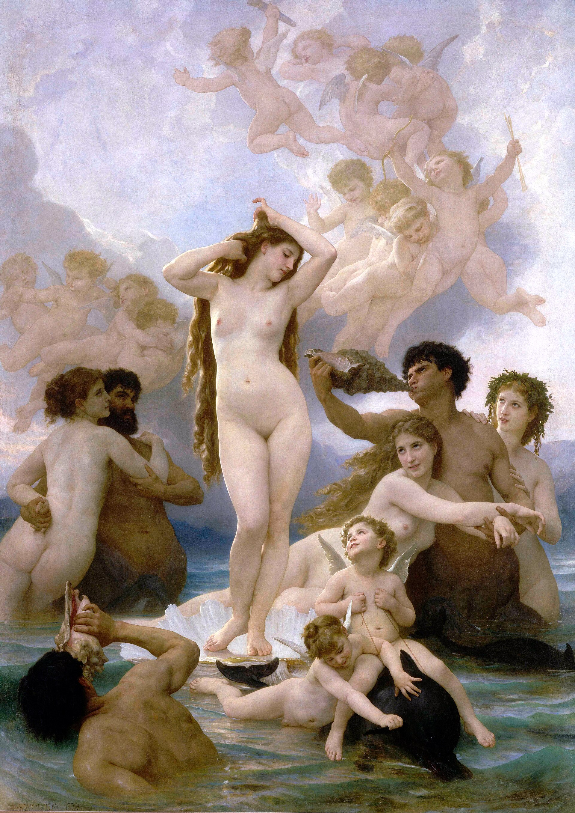
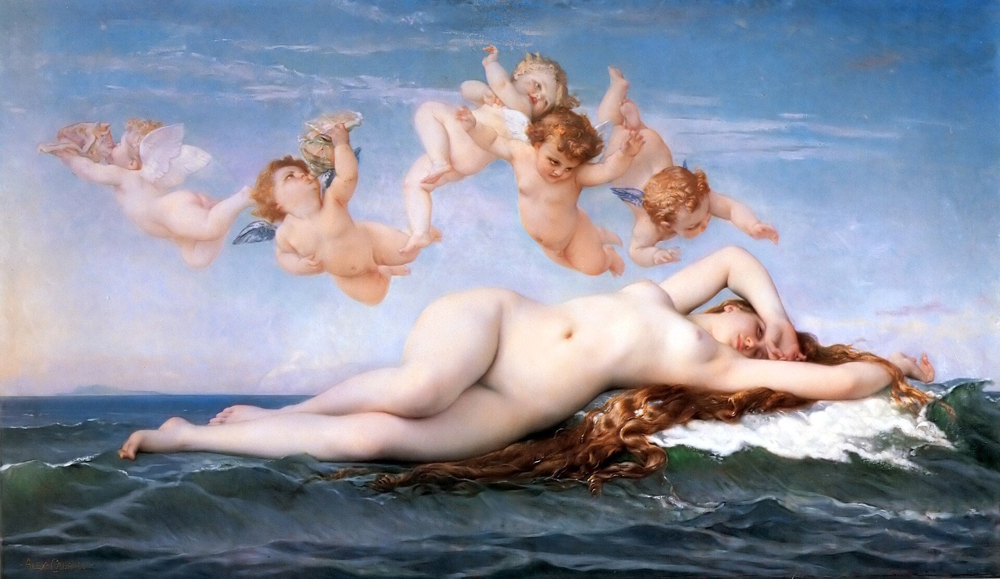

대표 화가
윌리엄아돌프 부그로, 《비너스의 탄생》 · 아카데미즘 · 프랑스·영국
선정 이유 부그로는 19세기 아카데미가 선호한 신화 주제, 이상적 인체, 붓자국 없는 완성을 가장 전형적으로 보여 준다.
고전 신화의 누드는 정확한 해부학과 매끈한 피부, 균형 잡힌 군상으로 제시된다. 같은 시대 사실주의와 인상주의가 거부한 공식적 기준이 무엇이었는지를 비교하게 하는 데 가장 유용하다.
Academicism
참고 학습
아카데미즘은 특정 붓질 하나보다 미술 학교, 살롱, 장르 위계, 심사와 국가 후원이 만든 공식적 제작·평가 체계다. 초심자는 작품의 매끈함뿐 아니라 누가 좋은 미술의 기준을 정했는지 함께 보아야 한다.
사실주의와 인상주의는 아카데미의 주제·마감·전시 기준에 서로 다른 방식으로 도전했다. 그러나 많은 혁신적 화가도 아카데미 교육에서 배운 기술을 활용했다.
흔한 오해: 아카데미즘을 단순히 낡고 나쁜 미술로 처리하면 당시 제도의 힘과 작품의 기술적 성취를 이해할 수 없다. 비판의 대상은 기술 자체보다 배타적인 기준과 위계다.
아카데미즘의 시대적 배경과 시각적 특징을 국가별 전개 속에서 살펴본다.
| 국가·지역·세부 사조 | 지역적 특징 | 대표 화가·제작자 | 더 볼 화가 |
|---|---|---|---|
| 프랑스·영국 — 아카데미즘 |
| 윌리엄아돌프 부그로 | 알렉상드르 카바넬, 장레옹 제롬 |

선정 이유 부그로는 19세기 아카데미가 선호한 신화 주제, 이상적 인체, 붓자국 없는 완성을 가장 전형적으로 보여 준다.
고전 신화의 누드는 정확한 해부학과 매끈한 피부, 균형 잡힌 군상으로 제시된다. 같은 시대 사실주의와 인상주의가 거부한 공식적 기준이 무엇이었는지를 비교하게 하는 데 가장 유용하다.

더 볼 이유 카바넬은 아카데미즘의 매끈한 기법과 신화적 누드가 살롱의 공인 취향이 된 방식을 보여 준다.
정확한 드로잉과 붓자국 없는 표면, 이상화된 신체는 아카데미즘의 규범을 드러낸다. 관능적 주제를 고전 신화의 권위로 정당화해 대중성과 제도적 성공을 함께 얻은 점은 카바넬만의 특성이다.

더 볼 이유 제롬은 아카데미즘의 정교한 역사 재현과 매끈한 표면이 대중적 스펙터클로 발전한 모습을 보여 준다.
고고학적 세부와 명료한 인체, 극적인 결말 직전의 순간은 아카데미 역사화의 특징을 드러낸다. 사진처럼 설득력 있는 허구의 고대를 구성한 점은 제롬만의 특성이다.